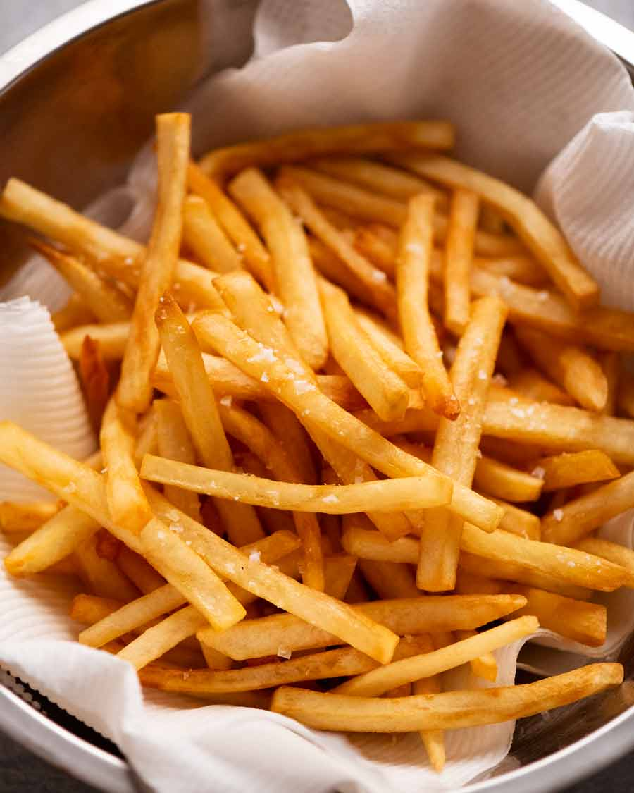

French Fries

Description:
Ingredients
Vinegar
Potato
Salt
Oil
Steps Overview
- Step 1: Cut fries with a serrated knife (secret crispiness tip #1)
- Step 2: No soaking, just rinse
- Step 3: Gently simmer 10 minutes in vinegar water (secret crispiness tip #2! And no, you can’t taste vinegar)
- Step 4: Shallow-fry twice
You're Done! Here are some happy reviewers
- "These fries were really good -jeff
- "well really they were just alright" - jeff
- "not the biggest fan of fries, i think its a bastardization of the potato" -jeff
- "these are pretty good, but i do agree with the above ^" -steve